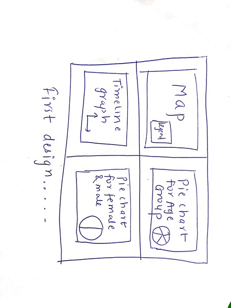
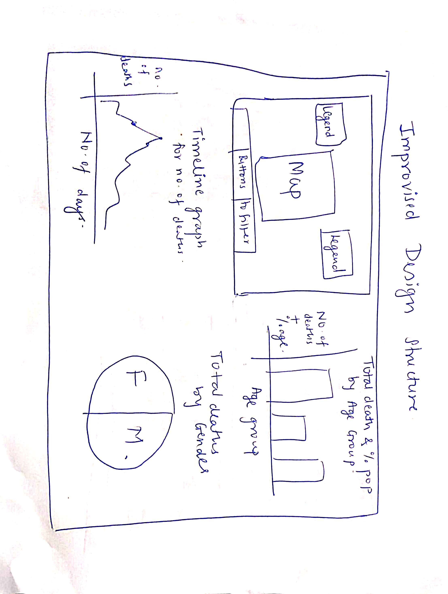

John Snow was a well-known physician known for his pioneering work in the field of epidemiology. Several cholera epidemics struck London in the mid-nineteenth century, claiming thousands of lives. The prevalent belief at the time was that cholera was caused by "miasma," or bad air. John Snow, on the other hand, believed that cholera was spread by contaminated water.
During a cholera outbreak in London's Soho district in 1854, John Snow conducted an investigation and mapped out the cholera cases in the area. He discovered that the vast majority of cases were centered on a single water pump on Broad Street. Snow persuaded local authorities to remove the pump's handle, effectively cutting off the source of contaminated water, and the number of cholera cases dropped dramatically.
Snow's research provided strong support for the theory that cholera was spread through contaminated water, and it paved the way for advancements in sanitation and public health. Today, John Snow is widely regarded as one of epidemiology's founding fathers. To know more about the cholera outbreak and John Snow's contribution, check the YouTube video : John Snow and the 1854 Broad Street Cholera Outbreak


John Snow (15 March 1813 - 16 June 1858[1]) was an English physician and a leader in the development of anesthesia and medical hygiene Wikipedia Link
After going through the requirements stated, we need to create our Cholera map along with 3 more side maps. Initially, I decided on creating the Cholera map, a pie chart for plotting deaths by age groups, a timeline graph for deaths by dates and again a pie chart for deaths by gender. The map is created with streets.json file with pumps, gender and age group data points. Then, I decided onto creating a pie chart for deaths by age group which will show total deaths in each group. Third, a timeline graph that plots the deaths by date and lastly a pie chart for deaths by age group.
In the final design version, I made a couple of changes. In the map, legend tables were added according to age group and gender on either side of the map along with buttons to filter the data points. I also added the pump image instead of a data point for better differentiation between pumps and data points of deaths. After plotting the pie chart for deaths by age group, I felt it is not an ideal plot as the text was being too crowded, hence i replaced it with a bar chart. The bar chart now has the total deaths by age group and also the percentage of population marked on each bar. The design for the timeline graph remained the same as the initial thought. Lastly, I plotted the total deaths by gender male and female,along with the percentage values.
For the map, I have used the streets.json file that contains x and y coordinates. On this map, the pumps.csv file is used to locate the pump location. I have added the images of pumps for better visualization. When we hover over these pumps we can locate it easily. Then, the deaths_age_sex.csv is used. With this file, the data points/ deaths are plotted wrt age groups and also gender. Two legend tables are added in this. The colors for filtering the points gender wise and age group wise are chosen from the brewer website Brewer Link which is a colorblind safe. I have used svg elements for creating the map. The street names are added on the graph along with the brewery and work house location. For filtering the data, I have created four buttons. The first two buttons specify all the data points wrt genders female and male. The pink color represents the death of females while the blue color data points represent the deaths of males. The data will get filtered according to when you click on the button. On the right side of the map, there is a legend table for deaths by age group. The different colors represent different age groups when you click on the “Age Group'' button. I have added tooltips for the circles and the pumps so that when you hover over them they will let you know the age group and the gender. Lastly, I have added a zoom feature that will help you zoom in and out to see the details more clearly and the user and also drag the map.
The bar chart that is placed in the top right corner of the page is plotted for the number of deaths on the y-axis vs age group on the x-axis . The colors that are chosen for each age group are easily differentiable for the colorblind people. The six bars on the bar graph are for the six age groups that we have created based on conditions using the daeths_age_sex.csv. The total deaths are kept on the bar in black and the total population percentage of deaths are shown in white for clear differentiation. This bar chart will get updated whenever the data gets updated in the file.
In the timeline graph, I have used the deathdays.csv file. The X- axis has the number of days and the Y-axis has the number of deaths. The line graph has points for each date. I have added a tooltip feature so when the user hovers however the points, he can see the total number of deaths on that particular date. The color chosen for this graph is orange which is a good option for colorblind people. The points are marked in black so the text will be visible clearly when the user hovers.
Lastly, we have a pie chart plotted that shows deaths are age groups. There are two age groups: females and males. These two genders are plotted with blue and pink colors which are considered to be easily recognised as pink for females and blue for males.
From the map we can see that the maximum deaths have occurred near to where the pumps are located. From the bar chart we can see the total deaths in every age group. The highest number of deaths were of people aged more than 80 years. This might mean these people did not have any other options and choose to drink the water from pumps near by their houses. The least number of deaths are seen for people aged 11-20. This age group consists of tennegars. The timeline graph tells the highest number of deaths occurred on September 1, 143. There was a gradual decrease in deaths after this date onwards. Lastly, from the pie chart, we can conclude that both the genders were equally affected by the effect of the cholera epidemic.